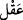
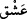

vasıftan hâlî olarak ilk safta Cenâb-ı Allah’ın huzurunda kıyâmına, sonra da o gaybî ve
rûhânî âlemden bu şehâdî ve cismânî makâma kudümüne işâret etmektedir.
Şu rivâyette de buna işâret vardır: Câbir (r.a.)’ın naklettiği bir hadis-i şerifte “Ey
Câbir! Allah Teâlâ senin Peygamberinin nûrunu yarattığında kurbiyet makamında,
huzurunda on iki bin sene durdurdu.”[228]
Bu “Lâ ilâhe illallah” ve “Muhammed Rasûlullah” ifadelerinden her birinin
harflerinin sayısının on iki olmasıyla açıklanmıştır. Yine hub (sevgi), daha sonra havf,
recâ ve hayâ makamlarının her birinde de on iki bin sene durdurduğunu ifade etmektedir.
Daha sonra Cenâb-ı Hak on iki bin perde yaratmış ve nur-i Muhammedî’yi her bir
perdede bin sene bekletmiştir ki bunlar ubûdiyyet makamlarıdır. Bunlar kerâmet, saadet,
heybet, rahmet, re’fet (şefkat), ilim, hilm, vakar, sekinet, sabır, sıdk, yakîn perdeleridir.
Bu nûr, her bir perdede bin sene ibadet etmiştir. Tüm bu sayılar toplamda yetmiş iki
sayısını ifade eder. Birinci cildde işâret edilen yirmi sekiz menzil buna eklendiğinde
hepsinin toplamı yüz olur. “Kaf” ile işte buna işâret vardır. Bu, yüz rahmet ve hakikatte
cennette Hz. Peygamber (s.a.)’e has kılınmış yüz dereceyi ifade eder. Nitekim O’ndan
başkası O’na tâbidir.
Allah’ın ilk yarattığı varlığın Nûr-i Muhammedî olması ve o Nur’un feyzinden
müminlerin yaratılması sebebiyle O’nun dışındakiler bu peş peşe gelen yüz sûrî
makamda ona tâbi oldukları gibi, seyr ü sülûk mertebelerine mebnî ulvî derecelerde de
O’na tâbidirler. Tüm bu menzillerin her birinde Kur’ân’la elde edilen bir ev vardır.
Çünkü kelâm-i nefsî O’na mertebe mertebe inzâl edilmiştir, en son Cebrail (a.s.) bu
şehâdet âleminde bütün umûmî ve hususi yönlerden O’nu teşrifen kalbine indirmektedir.
Tüm bu makamlara Kur’ân’la ulaşılır. Nitekim Kur’ân tilâvet eden kimseye şöyle
denilir: “Oku, yüksel, dünyada tertîl üzere okuduğun gibi yine tertîl üzere oku! Senin
menzilin, okuduğun en son âyetin derecesidir.”[229] Şüphe yok ki, O’nun ahlâkı Kur’ân
idi. Bunun için de Kur’ân’ın izzet ve şerefiyle izzet kazanmış ve şereflenmiştir. Bunu iyi
anla. Bu Allah’ın kuluna ihsan ettiği husûsî lütuflarındandır.
Ayrıca “Kaf”ın mânâsı işâret yoluyla “Aklın () kaf’ından sakının ve aşkın ()
şin’ine tutunun!” demek de olabilir. Nitekim bir şair şöyle der:
Mutluluk ve sevinç aklın “kàfında” (Kafdağı’nda) kilittir,
Aşkın “şîni” cennet anahtarının dişleridir.
Âlimlerden bir kısmı şöyle der: “Kaf” göz küresinin gözü kuşatması gibi yeryüzünü
kuşatmış bir dağdır. Kaf, dünyadaki dağların en büyüğüdür. Cenâb-ı Allah onu yeşil
zümrütten veya yeşil yakuttan yaratmıştır. Semânın yeşilliği ondandır. Semâ, ona
bitişiktir. Hiçbir köy, hiçbir şehir yoktur ki içerisinde o kaf dağından bir damar ve onun
üzerine ellerini koymuş görevli bir melek bulunmasın. Allah Teala bir kavmi helak
etmek istediği zaman bu meleğe vahyeder, o melek de bu damarı harekete geçirir ve
oranın halkını yerin dibine geçirip helâk eder. Şeytanlar bu yâkuta gidip ondan alırlar ve